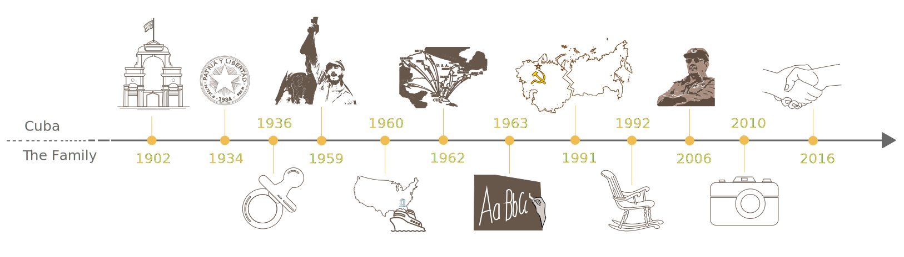

Clic.
Diego Delgado está un susurro lejos del hombro de su abuela, su ojo izquierda enterrado en el visor, pero Coralia Ortiz no oye a su camera. El fotógrafo de veinticinco años no tiene la luz mejor para trabajar cuando pisa por Coralia en silencio, pero está inspirado. Hay algo sobre la expresión intensa de su cara, la manera en que las líneas finas de sus cejas arquean sutilmente ascendente y su labio bajo cuelga abierto en contemplación. Ella crea muchos tipos de oficios, pero su favorito hacer es la brujita, que cuelga de un cordel. Ella clava sus ojos en cada punto — el tipo de astucia que sólamente viene con años de práctica. El diabétis de Coralia y otros asuntos con la salud le fuerzan pasar su tiempo en la casa, pero en estos momentos, ella se cae en una trance. Diego no puede ayudar pero captarlo.
¿Pero, fotos? ¿De ella coser? Coralia no lo cree. Seguramente, ella podría oír a su nieto pacing por ella, rozando sus piernas por la colcha del encaje que ella cosía. Se puede oír la calle trajinando afuera, pero el cuarto de Coralia es lo más silencioso que se puede encontrar en la Habana — tan silencioso para el obturador de una camera pasar inadvertido.
Ese es lo que fascina a Diego. Alto y enjuto con pestañas largas que enmarcan sus ojos profundos y morenos, él rezuma la energía. Entre tomar fotos para El Arca, una revista de animales, trabajar por cuenta propia como fotógrafo para otras revistas, jugar fútbol y cuidar a Coralia, Diego no puede pasar tanto tiempo en una tarea. Además, le encanta la acción; lo ansía. Pues, él admira que Coralia puede estar quieto por horas, que las paredes del apartamento y su salud no pueden limitar su espíritu creativa — que su pasión es tan cautivador, ella no se da cuenta de que su éxtasis se ha convertido en la enfoque del arte de su nieto.
Diego ha vivido permanentemente con Coralia en el apartamiento de tres cuartos en la municipalidad Plaza de la Habana por cinco años, pero pasaba partes de su niñez con ella también — seis meses a dos años a la vez — porque el trabajo forced la madre de Diego, Adriana, vivir más lejo de la ciudad. Coralia prácticamente lo criaba, él dice. Pero ahora, por el diabétis de Coralia, Diego tiene que cuidar a ella.
Con la población envejecida aumentando, más y más de la juventud necesitará cuidar a la generación más viejo. Pero mira más cerca. Quizás la muerte de Fidel Castro el 25 de noviembre marcó una handoff en leadership de la generación más viejo a la generación joven. O quizás no. Quizás señaló una otra cosa — una relación que está cambiando. Algo menos sobre quién está guiando y más sobre a dónde van, lado por lado, dedos y destinos entrelazado.
This chart shows the percentage of Cuba's population that is over the retirement age in Cuba from 1985 to 2015. The retirement age for women was 55 and for men was 60. The retirement age officially changed in 2017 to 60 for women and 65 for men.
Este no es la posición de Diego.
Él es el pilar de la defensa de su equipo de fútbol. De los cinco jugadores que llenan la corte de futsal, él es la persona que necesita abrazar el costado del portero.
Pero es tan tarde pensar en esto ahora. Él ya está esprintando por el corte hacia el lado de ataque después de robar el balón. Sus ojos escanean la corte, buscando la asistencia, pero nadie está abierto. Él lo guarda, entonces dispara el balón al neto; lo hace tin de la pared para una gol, y la celebración sigue. Diego choca esos cinco como si estuviera abofeteando la superficie de un lago, y gritos de deleite rebotan del techo blanco del estadio. El defensor se ha convertido en la fuerza de ataque de su equipo.
Marcador y defensor, competidor y capitán, energizer y donante del cuidado — Diego está acostumbrado a hacer malabarismos. Él no tiene un día normal. Dejó la rutina para perseguir momentos con su objetivo.
Diego probó la estabilidad. Después de terminar la escuela secundaria a 15 años, el amante de animales empezó a estudiar para ser veterinario mientras tomando clases de fotografía y trabajando en un restaurante. Pero el estilo de vida no satisfació a su espíritu.
“Iba a pasar toda mi vida trabajando en una cocina,” Diego dijo, “y yo no lo querría para mí.”
Diego tenía cuatro años cuando tomó su primer foto, y la pasión le queda naturalmente. Mientras sus amigos se dieran de su talento, le desalentaron de acudir a la fotografía para una carrera — tan impredecible, le dijeron.
Su familia no. El padre de Diego y su abuelo disfrutan el arte como un pasatiempo, pues Diego empezó tomar fotos profesionalmente cuando tenía 21 años. Él desde ha acumulado una abundancia de escenas congeladas; algunos animan las paredes de su cuarto. Pero quizás la decoración más revelador no es algo que Diego captó, pero el cartel azul y amarillo calzado por la puerta que parece captar a él: Una filosofía que pasa su mirada cada vez que sale de su cuarto.
¿Pénsate que lo habías visto todo en cuestión de recuerdo? Adelante.
A veces, Coralia lleva su edad. O quizás su edad se desgasta. Ella baraja por el apartamiento — “mi cueva pequeña,” ella dice — agarrando el cubierta o una silla cerca para apoyo. Hay una caja de medicina en la cubierta para su diabétis y una jarro de jugo en la refrigeradora. Sus coyunturas doloridos le dejan atado a su apartamiento.
¿Pero ahora? Ella es aire.
La tela oscura de su falda agita mientras Coralia se balancea al pulso de la música que late débilmente de la televisión. Su cara redonda y simpática irradia a una sonrisa, sus pies dando un golpecito mientras ella se desliza sus brazos al ritmo.
Salsa solamente es una de la interesas de Corala. Ella devora a cualquier cosa artística, cualquier cosa con una historia. A diferencia de Diego, Coralia luchaba a su familia para perseguir sus pasiones. Su padre querría que ella fuera una contador, pero el alma de Coralia no se quedó en esa molde. Ella empezó estudiar la filosofía y la literatura en la universidad, pero necesitaba parar tres años después de su primer año porque la universidad estaba cerrada durante la revolución. Cuando la universidad reanudó, Coralia recibió una beca pasar un año en los Estados Unidos estudiando en UNC-Chapel Hill.
Coralia empezó a enseñar la literatura en 1963 y no paró hasta su jubilación 35 años después. Un año después de conocer a su esposo en una conferencia de arquitectura, ella se casó y tenía dos hijas. Ella guarda la caja de fotos en el cuarto de Diego. Después de poner su tesoro en la mesa, ella levanta la tapa con parches deshilachados marrones y blancos para revelar la reliquia principal — un álbum de recortes bronceados con páginas amarillas y palabras escrito en lápiz para describir a las memorias. Paros de ojos fábricos le estudian mientras ella recuerda: dos brujitas colgadas, un búho morado colgando y un pez espada verde, hecho para agarrar al pan y creado en el imágen del pez del libro “El Hombre Viejo y el Mar” por Ernest Hemingway.
La amante de historias mora con personajes nacidos por su imaginación.
How Coralia and Diego’s lives align with Cuban history
SOURCE: BBC Cuba Profile - Timeline, Wikipedia
Los músculos de Diego están quemando.
El sol bate en su frente mientras la colina que está ascendiendo bate a su piernas. El más tiempo que Diego está afuera, pedaleando a su bicicleta por las calles de la Habana, el más que puede sentir el calor cavando en su piel.
Es el fin del mes, cuál significa que él necesita recargar la medicina de Coralia, una colección de pastillas que ella toma tres tiempos por día. Pero, es lejo — tan lejo para Coralia hacer el viaje. Pues, Diego planifica con antelación, organizando a su trabajo por el mandado que toma horas.
Pero Diego encoge la caminata. El viaje no es tan malo, el dice; esperando en la línea es la parte peor. Veinte minutos con nada de hacer otra de mirar al techo, sus dedos de pie y su watch reloj.
El inquietud joven de Diego está creciente más única in Cuba. Con una edad mediana de 41.1 años, 25.9 por ciento de la gente tiene más que 55 años, y un estimado 36 por ciento tendrá más que 60 años por 2050. La municipalidad Plaza — dónde viven Diego y Coralia — es la región más viejo en la Habana.
Cuba aumentó a su edad de jubilación a 65 años para los hombres y 60 para las mujeres en 2009, pero con una espacio de vida promedia de 78.7 años, una porción considerable de la gente se echa afuera de la población activa. Una escasez de casas de retiro significa que más responsabilidad se cae en los miembros más jóvenes de la familia.
Pero un parte de eso relaciona a las casas. Casas son carros, y mientras personas jóvenes cuestan encontrar trabajo que queda con su educación, estar en la casa de la familia es más fácil en la Habana. Aún, la situación de Coralia es inusual.
“Son muy pocos los abuelos que viven solos,” Coralia dijo, “y muchos menos que tienen un nieto que vivan con ese abuelo que vive solo.”
Cuando Diego tenía 20 años, el médico de Coralia dijo que ella necesitaba a alguien vivir con ella. Pero Adriana había comprado una casa en una otra ciudad, y el hermano de Diego sólamente tenía 12 años; alguien tenía que criar a él. Adriana presentó a Diego con una decisión. Cuidar a Coralia, o su hermano? Para Diego, era fácil. Un niño creciente era tanta responsabilidad, y había algo sobre Coralia — una conexión compartido de todo el tiempo que pasaban juntos cuando Diego era niño. Es una relationship diferente ahora. El aún es el nieto, pero no quite el niño que paraba por el sidewalk para escuchar a una lectura de su abuela sobre la arquitectura. Diego hace la limpieza intensa en la casa. Él runs errands, monitors las visitas medicales de Coralia y le cuida.
“El me ayuda mucho con cosas en la casa porque no puedo,” Coralia dijo. “Él es mi mano derecho.”
“Mira,” Coralia dice. “Yo te mostraré cómo hacer una brujita.”
Ella tamiza por una colección de alambres y se resuelva en un blanco — bastante duro para estar firme cuando lo dobla, pero bastante suave para cortar. Un trozo para las armas, uno para las piernas. Ella se desliza los dos dentro condones negras y los pies juntos. Después de añadir la cabeza — un trozo de calceta bronceada lleno con el algodón — ella da un nombre a la brujita.
“Luna,” ella dice. “Moon.”
Coralia Ortiz ve desde su apartamento mientras Diego camina a coger el autobús para ir a su partido de futsal.
Photo by
Natalie Roush
Cuando Coralia ha terminada, Luna falta un sombrero, una escoba y una cara, pero la brujita tendrá que esperar. Diego volverá al gimnasio temprano, y él necesitará su cena. “Él siempre tiene hambre,” ella dice. Una colección de ollas está en la cocina en preparación — dentro de uno es pudin casero de pan.
Coralia escoge algunas bocados del cuchillo, pero éste es todo que ella comerá. Diabétis le bloquea de disfrutar sus dulces, pero ella aún los hace para Diego. Cómo no? No se necesita comer su postre para saber que es uno de los mejores en la Habana. Mire cómo las esquinas de los ojos de Diego arrugan cuando él menciona a las dulces de Coralia.
Esa misma sonrisa estira a través de la cara de Diego ahora, mientras se sienta en la mesa de la cocina y dice cómo él busca la opinión de Coralia sobre su ropa antes de salir de la casa. “Siempre me dice que hace frío,” él dice, “que necesito una chaqueta.” Mira a una de las brujitas colgando de Coralia antes de volver y seguir. Si manda un email importante, busca consejos de su abuela, la aficionada de gramática. Cuando quiere una perspectiva afuera de la esfera de fotografía, consulta a Coralia. Tareas diarias no resbalan por las rajas con su vida activa, porque Coralia llevará la ropa en la casa si hay lluvia, y ella tomará un mensaje en el teléfono.
La sociedad Cubana está cambiando con la generación de Diego tomando el timón. Cuando Diego va en una cita, la chica no necesita a un padre acompañar y sentarse entre los dos en el cine. Estudiantes femeninas en la Universidad no se preocupen como Coralia sobre encontrar un acompañante a las clases por la noche. Los cambios son tan crudos, que Coralia considera entonces y ahora como mundos apartados.
Su casa ha evolucionado, y su papel también. Diego no necesita estar criado nada más, pero él aún leans en ella — no como su donante de cuidado.
Como su confidente.
Mientras la masa de cuerpos empezó clamar en el autobús, Diego encontró a un hombre más viejo costando. Sin vacilación, Diego retrocedió de sus amigos para to envolver su mano por el antebrazo del hombre y soportar un poco del peso.
Lo está haciendo otra vez. Agarra misma, antebrazo diferente. Ahora, está asistiendo a Coralia mientras ella alivia de la cuneta afuera de su apartamiento, un logo amarillo de Superman estampado en su gorra al revés.
Juntos vagan por las calles del barrio para comprar comida en el mercado cerco. De vez en cuando, los dos conocen con un vecino más viejo y paren para intercambiar besos. Coralia selecciona a la comida de las casetas de frutas y verduras y paga con el dinero en su bolsa. Pero cuando ellos salen, Diego toma la bolsa blanca de plástico en su mano derecho. Más tarde, Coralia lo transformará en comida.
Las generaciones de juventud y viajes en Cuba forjan en la futura rodeado por incertidumbre. Cómo el país aguantará con las exigencias de una gente jubilado aumentando, cómo fomentará a la oportunidad para la juventud en medio de déficits en las viviendas y el empleo, cómo adaptará al paisaje global que está cambiando. Para Cubanos, viejos y jóvenes, el destino es un misterio. Pero una cosa es claro en este viaje de generaciones: Se mueven como iguales.
Eso es cierto para Diego y Coralia, mientras se deslizan debajo del sol. Diego, con sus miembros largos y ansiosos parece como si podría quitarse cualquier minuto, mientras Coralia, su bolsa colgante en su andadera, es deliberado con cada paso. Pero mire más cerca. Ellos no son tan diferentes. La ratón de biblioteca que gira a sus pulgares en un círculo religiosamente y el estrella de fútbol que no puede sentarse inmóvil.
Dos artistas, amarrado por sangre y llaves idénticos, apretándose adelante dentro del cielo abierto.